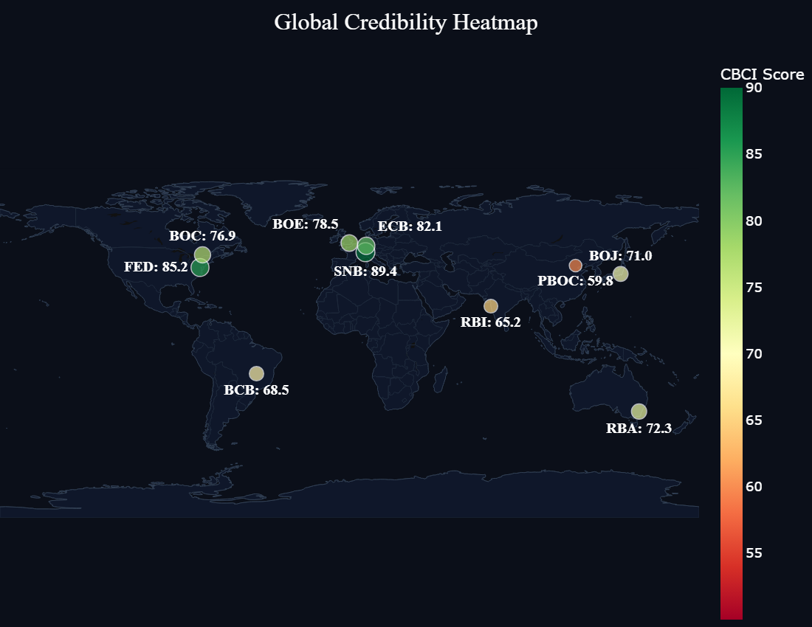
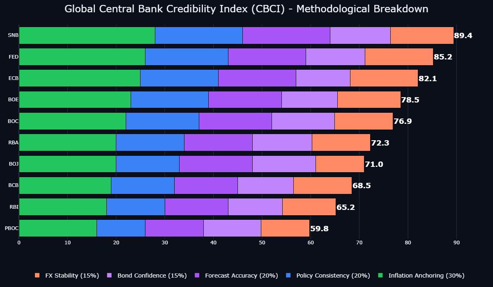
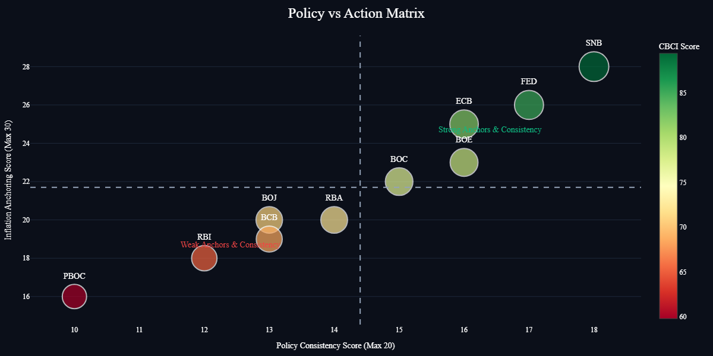
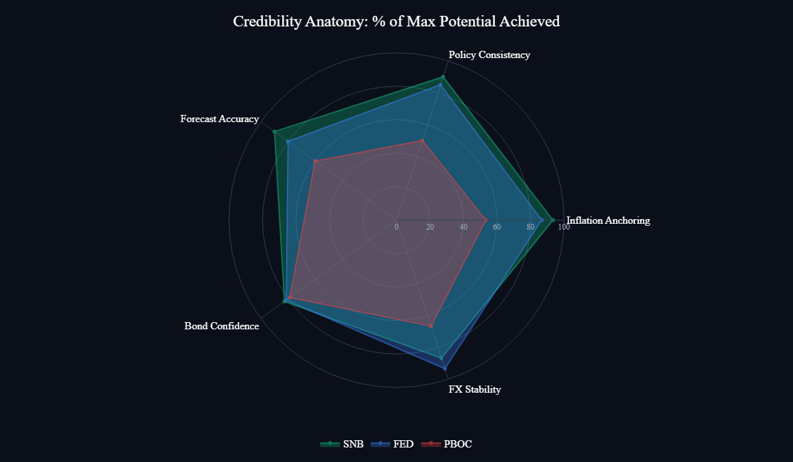
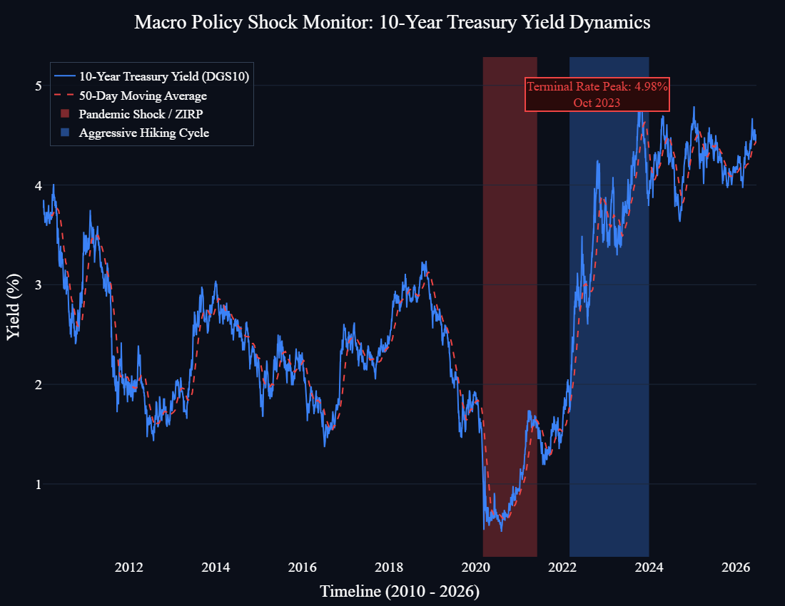
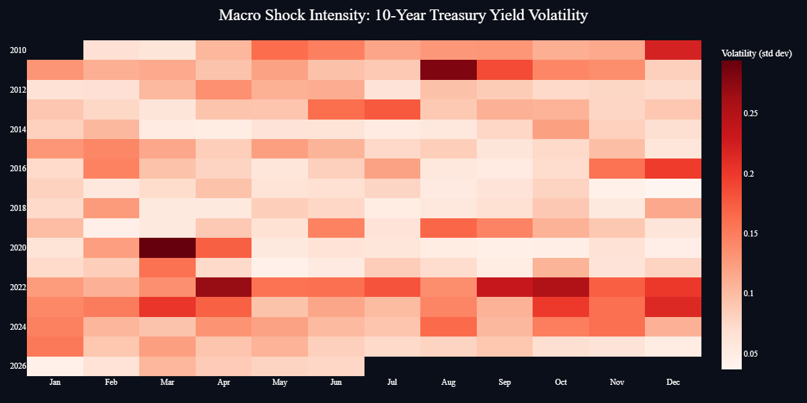

The 2022 global inflation crisis served as a watershed moment for modern monetary policy.
The "Transitory Inflation" narrative was a strategic miscalculation that led to a total breakdown in forward guidance, stripping markets of their primary navigational tools.
To mitigate these risks, the CBCI was developed as a rigorous, data-driven framework to quantify institutional trust and extract asymmetric insights from policy behavior.
Credibility is the currency of central banking. When it fractures, markets break.
Over the last decade, we have transitioned from a regime of Forward Guidance to acute Policy Shocks. The market no longer implicitly trusts official projections.
This index strips away subjective narrative to quantify trust using 5 mathematical pillars.
A definitive 0–100 score insulated from subjective bias:
Absolute deviation of headline inflation from official targets over a 12-month window.
Evaluates NLP alignment between communication (FinBERT) and subsequent interest rate moves.
Quantifies Mean Absolute Error (MAE) of central bank economic projections.
Tracks rolling volatility in sovereign bonds (FRED DGS10).
Evaluates currency pair safe-haven behavior during market stress.
A strategic shift from fragile manual spreadsheets to an automated, high-integrity pipeline.
Programmatically ingesting over 4,200 days of raw data from the FRED API. Eliminates human error.
The single source of truth. Enforcing strict data types and managing exact FOMC meeting metadata.
Moving away from unversioned drag-and-drop tools to fully auditable, Git-versioned visualization layers.
Converting unstructured central bank communications into quantitative data points.
Specifically trained for financial contexts. FinBERT parses thousands of FOMC and ECB policy statements to generate a precise hawkish-dovish scale.
The model heavily penalizes central banks when dovish communication is immediately followed by hawkish actions. These shocks are a primary driver of catastrophic bond market volatility.

Institutional trust is heavily concentrated in Western European and North American hubs, showing strong structural resilience compared to emerging markets and heavily opaque regimes.

Maintained extreme FX stability and tight inflation anchoring throughout the 2020s.
Penalized for lack of transparent forward guidance and policy consistency.

Banks in the top-right quadrant deliver on their forward guidance, requiring zero risk premium. Banks in the bottom-left suffer from structural credibility deficits.

The radar exposes the PBOC's total collapse in Policy Consistency, while the FED bleeds points on Inflation Anchoring relative to the SNB's near-perfect geometric symmetry.

However, the bond market always remembers. Yield spikes perfectly align with macro policy shocks.

The deepest reds correlate perfectly with periods where central banks abandoned forward guidance, triggering massive bond market sell-offs and institutional panic.
Engineering Over Manual Logic: Transitioning to Python/SQL is essential for mitigating model risk.
Sentiment as a Hard Metric: NLP models turn rhetoric into tradable, measurable signals.
Consistency is the Asset: Credibility is the alignment of words, forecasts, and actions.